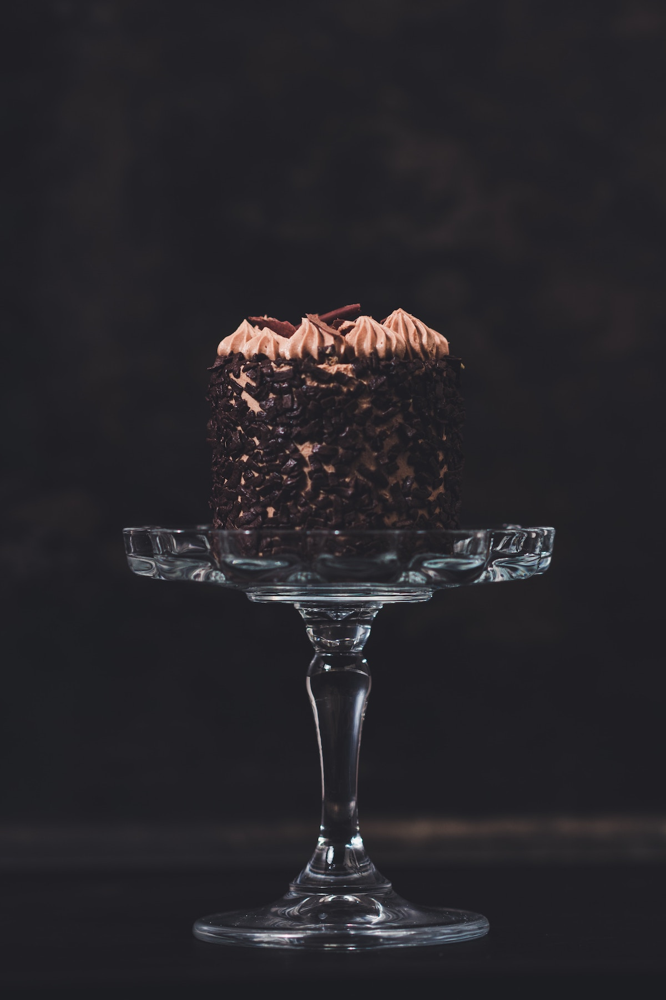

Cake

Better than sex Cake
This aptly named Better Than Sex Cake — complete with a sweetened
condensed milk-caramel sauce, chocolate-covered toffee, and whipped
topping — is as indulgent as it gets.
Ingredients
- 1 (15.25 ounce) package devil's food cake mix
- 1 ¼ cups water
- ½ cup vegetable oil
- 3 large eggs
- ½ (14 ounce) can sweetened condensed milk
- 8 ounces caramel ice cream topping, divided
- 3 ¼ (1.4 ounce) bars chocolate covered toffee, chopped
- 1 (8 ounce) container frozen whipped topping, thawed
Steps
-
Preheat the oven to 350 degrees F (175 degrees C). Grease the bottom of
a 9x13-inch glass pan.
-
Mix cake mix, water, vegetable oil, and eggs in a large bowl with a
mixer on medium speed until well combined. Pour into the prepared pan.
-
Bake in the preheated oven until a toothpick inserted in the center
comes out clean, 30 to 35 minutes. Cool on a wire rack for 5 minutes.
Cut shallow slits across top of cake; make sure not to touch the bottom
of the dish.
-
Meanwhile, combine sweetened condensed milk and 6 ounces caramel topping
in a saucepan over low heat; stir until smooth. Slowly pour mixture over
top of warm cake, letting it soak in. Set aside 1 to 2 tablespoons
chopped chocolate toffee for decorating; sprinkle remaining toffee
liberally across entire cake.
-
Cool cake completely, then top with whipped topping. Decorate top of
cake with the reserved toffee and drizzle with remaining caramel
topping.
- Refrigerate until chilled through and serve right from the pan.